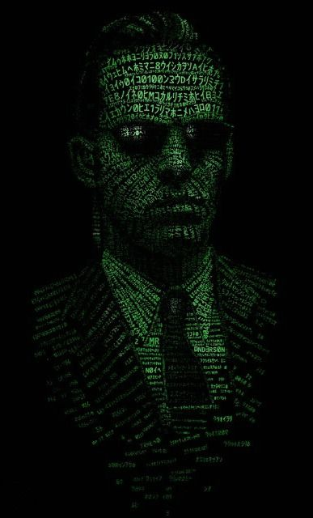

biography

Nunc suscipit elementum ipsum, eget ornare turpis lobortis quis. Fusce condimentum tristique turpis, ut dignissim elit volutpat eget. Mauris purus lectus, bibendum sit amet congue vel, ultrices sed nisl. Praesent sit amet erat vitae purus varius gravida eget at eros. Nunc rhoncus egestas justo quis pharetra. Proin condimentum pellentesque dolor, eget mollis nunc congue at. Praesent magna felis, egestas scelerisque semper id, aliquet commodo est. Nunc sed leo at turpis vulputate mattis. Mauris feugiat, libero vel faucibus commodo, mi arcu commodo ante, non sodales sem nisi sit amet risus. Aenean id varius ex, a dapibus nibh. Donec sed tincidunt lacus. Suspendisse luctus, odio eget tempor laoreet, ipsum sapien commodo ex, quis bibendum turpis lacus in quam. Nulla nisi ex, viverra porttitor turpis id, euismod tempor erat.
Aenean odio arcu, condimentum sed facilisis quis, facilisis vel ex. Donec eget tincidunt dui. Nullam eget elit eu leo ullamcorper semper id vitae tortor. Vivamus vehicula varius magna, quis semper dolor venenatis nec. Integer eu enim vel ex vehicula gravida. Aliquam et mauris vel tellus cursus rhoncus lobortis quis ante. Vestibulum egestas augue elit, ut porttitor dolor dignissim at. Vestibulum nec ultrices risus, a dignissim felis. Sed egestas risus quam, ultrices blandit ex condimentum non. Donec eget vehicula mauris. Donec vel augue pretium, congue nisi ut, sodales ex. In hac habitasse platea dictumst. Nullam est erat, eleifend nec massa ac, viverra rhoncus tellus. Sed vel porttitor ligula. Ut eu faucibus dolor, ut pretium magna.
Vivamus vel porta odio, a euismod elit. Sed eget dolor augue. Etiam vel leo vel nisi fermentum dapibus at vel lacus. Suspendisse a diam a tellus venenatis tristique. Mauris vehicula sed risus ac fringilla. Sed eu semper neque. Etiam eu tincidunt purus. Proin mattis ex at purus congue, vel malesuada tellus sodales.
Sed pulvinar augue egestas ipsum imperdiet tempor. Ut in est aliquet, pharetra dui nec, dapibus sapien. Etiam a convallis erat. Quisque ac metus vitae sem sagittis hendrerit eu sed nisl. Sed auctor condimentum neque et elementum. Maecenas finibus, tellus sit amet luctus malesuada, odio massa pellentesque tortor, et porta mauris mi et velit. Proin interdum egestas arcu, id aliquet est fringilla id. Aenean congue dolor et purus vulputate blandit. Sed hendrerit sollicitudin odio quis bibendum. Suspendisse potenti. Sed ac lacus metus. Sed odio purus, faucibus a neque laoreet, laoreet volutpat sapien. Proin vitae nisl quis elit tincidunt scelerisque.
Mauris semper leo ac arcu lobortis dapibus. Phasellus orci ligula, dignissim vel faucibus sed, egestas vitae sapien. Curabitur lacinia elit eu ex aliquam, in placerat tellus placerat. Aenean quis nulla arcu. Maecenas vestibulum nisl vitae felis consequat mollis. Sed nec arcu ac arcu blandit commodo. Curabitur dapibus massa ut metus tempus, at scelerisque purus aliquet. Donec vel diam nulla.
Morbi volutpat leo ex, id eleifend orci vulputate eu. Fusce nec tortor lobortis, maximus risus a, varius nulla. Fusce porttitor consectetur quam, in imperdiet erat tempor pharetra. Suspendisse consectetur ultrices neque, ut tempor felis mattis eu. Ut placerat massa sit amet erat placerat, aliquam luctus tortor rhoncus. In ac rhoncus ligula. In mollis, nibh id tincidunt venenatis, massa ipsum mollis dolor, euismod sagittis leo ipsum non enim. Aliquam erat volutpat. Cras ligula nunc, egestas at leo non, feugiat bibendum neque. Nulla quis commodo elit. Vivamus ac mi ipsum. Nulla fringilla ex at ante vulputate, et facilisis leo volutpat. Sed vehicula, turpis vel mattis fringilla, dui lectus semper libero, quis viverra nunc augue a lacus.
Nam pulvinar magna risus, vitae lobortis ligula gravida ac. Donec fringilla est quis faucibus vulputate. Donec sem est, semper nec faucibus nec, egestas sit amet leo. Morbi gravida tempor luctus. Duis sem lorem, cursus vitae felis id, tincidunt dapibus est. Aenean sem urna, tristique ac nisl sit amet, congue rhoncus est. Donec gravida accumsan eros eget pharetra. Etiam convallis euismod erat sagittis fringilla. Pellentesque dapibus a ligula non porta. Morbi congue velit nec risus consequat commodo.
Ut ultricies urna et purus eleifend, vel maximus felis rutrum. Duis nulla felis, eleifend aliquet ligula ut, gravida feugiat ex. Integer felis eros, placerat sit amet velit at, lacinia consectetur augue. In hac habitasse platea dictumst. Etiam commodo convallis gravida. Class aptent taciti sociosqu ad litora torquent per conubia nostra, per inceptos himenaeos. Donec mi tellus, lobortis sit amet urna sed, tincidunt mollis arcu. Donec enim ipsum, sollicitudin ut sem et, hendrerit semper leo. Sed non augue aliquam, lobortis tortor sed, blandit nunc. Curabitur sodales libero non tellus scelerisque, a ornare lectus convallis. Phasellus hendrerit ullamcorper nisi, ac pretium nunc fringilla vitae. In at nibh dolor. Pellentesque commodo rutrum ipsum, sagittis aliquam ante lacinia id. Maecenas quis erat ac arcu porttitor auctor. Integer fringilla suscipit mauris, fringilla imperdiet magna pellentesque vitae.
| The Matrix | The Matrix Reloaded | The Matrix Revolution |
|---|---|---|
| In the first film, Smith is one of the three Agents sent to deal with Morpheus. After Neo is successfully removed from the Matrix, Smith arranges Morpheus' capture by bribing Cypher, a disillusioned member of Morpheus' crew, with reintegration into The Matrix. When Neo manages to free Morpheus, Smith and his fellow Agents engage in a lengthy cross-town chase. He and Neo fight, with Smith dominating most of the fight. Shortly after Neo escapes the fight, Smith guns him down. Neo revives, realizes his power as the One, and enters Smith, to destroy him from within. | As a result of his contact with Neo from the first film, Smith is "unplugged" in the second film, no longer an Agent of the system but a "free man". This is signified by the lack of an earpiece, which he sends to Neo in an envelope as a message early in the film. His appearance has changed in the second film as well; his sunglasses now have an angular shape different from the Agents' oblong lenses, approximating the shape of the ones Neo wears. His suit color, as opposed to the greenish tint from the first film, is now jet black. He still possesses the abilities of an Agent, but instead of being able to jump from one human to another, he is able to copy himself over any human or program in the Matrix through direct contact; this includes humans wired into the Matrix, non-Agent programs with human forms, redpills, and other Agents. Smith retains the memories and abilities, if any, of the one over which he copies himself. This ability is much like how a virus replicates, creating an ironic contrast with the first film, where Smith likens humanity to a virus. He makes the claim that Neo has set him free. However, he believes there is an unseen purpose that still binds him to Neo. He tries to copy his programming onto Neo, but when this fails, he and dozens of his clones attack him, forcing Neo to flee. Later, he and his clones try to stop Neo from reaching the machine mainframe, without success. Smith copies himself onto Bane (Ian Bliss), a crew member of the Zion hovercraft Caduceus. While waiting to leave the Matrix with a message from The Oracle, Bane is attacked and overwritten by Smith, who then takes control of his body in the real world. Smith tests his control over the body by making Bane cut his own arm, in preparation for an assassination attempt on Neo that he quickly abandons. He later sabotages the Zion fleet's defense of the city by triggering one ship's electromagnetic pulse weapon too early, knocking out the other ships and allowing the Sentinels to overrun them. | By the start of the third film, Smith has managed to copy himself over nearly every humanoid in the Matrix, giving him complete control over the "Core Network" (the underlying foundation of the inner workings of the Matrix), thus rendering him immutable by even the Machines themselves. The Oracle explains to Neo that he and Smith have become equal in power and that Smith is Neo's negative, a result of the Matrix's equation trying to balance itself. She tells Neo that Smith will destroy both the Matrix and the real world unless he is stopped. Smith soon assimilates the Oracle, gaining her power of foresight, or omniscience, and later manifests reality-bending powers equivalent to Neo's, such as the ability to fly. Meanwhile, in the real world, Bane (now under Smith's control) stows away on a ship being used by Neo and Trinity and tries to kill them both. Neo is blinded in the fight, but discovers that he can now sense Smith's essence acutely enough to land a blow that kills Bane. Near the climax of the film, Neo offers a deal with the Machines to get rid of Smith in exchange for Zion's safety, warning them that Smith is beyond their control and will eventually spread to the machine city, which will result in destruction of both mankind and machines. Knowing that Neo is right, the Machines agree to his terms and command all Sentinels attacking Zion to stand down and wait for orders. They later give Neo a connection to enter the Matrix to stop Smith on their behalf. Although the Matrix is now populated exclusively by Smith and his clones, the Smith that has obtained the Oracle's powers battles Neo alone; as he explains, he has foreseen his victory, and has no need for the help of his copies. The two are almost evenly matched as the fight begins, though Neo's combat abilities seem arguably superior to that of Smith, the latter attacking more out of brute force, rather than the technical skill he displayed in the first film. This lasts, until Neo is able to punch Smith strongly enough to slam him into the street at least 20 ft away. As the fight continues, however, it becomes clear that Neo cannot win with his finite stamina against the tireless Smith, who begins to dominate Neo in the fight; by the end of the fight, he is able to brutally beat Neo into near defeat. In the midst of this battle, Smith explains to Neo his final nihilistic revelation: "It was your life that taught me the purpose of all life. The purpose of life is to end." When Neo is near defeat, Smith demands to know why he continues to fight despite knowing he cannot win. Neo calmly responds, "Because I choose to" and is savagely pummeled by the enraged Smith as a result. Suddenly recognizing the scene from his prophecy, Smith is compelled to deliver the line he said in it: "I say.... Everything that has a beginning has an end, Neo." His own words confuse and frighten him, and Neo realizes that he cannot overpower Smith and allows himself to be assimilated. Because Agent Smith has deleted the anomaly (Neo) he no longer has a purpose and must also be deleted. Smith is now directly connected to the Source, the machines are able to destroy all copies of his programming and reboot the Matrix without errors. The process kills Neo, whose body is carried away by the machines, and an uncertain peace is established between Zion and the machine world. |